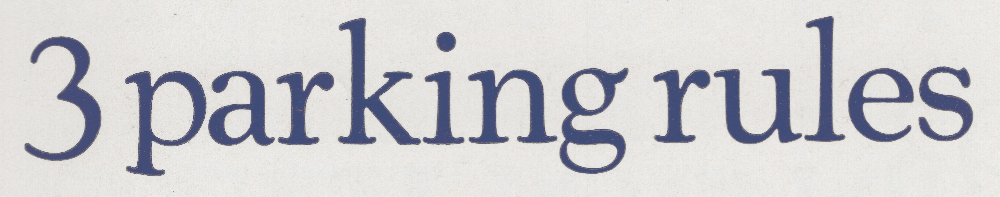

⚘ About
You're already familiar with the font Cooper Black, even if you don't know it by name. It's so ubiquitous that any attempt to describe its ubiquity inevitably falls short. Multi-million dollar companies and mom-and-pop shops use it for their logo. It's on T-shirts and album covers and the food packaging in your cupboard. It's in movie and TV show title sequences, and on protest signs, book covers, and bumper stickers. Anywhere there's a need for people to express themselves with typography, Cooper Black can be found.
But when Cooper Black was first designed over a hundred years ago, it was part of a typographic family. Cooper Black, as the name implies, is very bold, but Oswald Cooper, its designer, created a regular, non-bold version as well. Despite Cooper Black's overwhelming popularity, I have yet to see a single instance of its non-bold counterpart being used in the wild. Most people don't know such a font ever existed.
Which is a pity, because as stylish as Cooper Black is, its lightweight sibling is uniquely beautiful. It has an organic, Art Nouveau, feel to it. Straight lines bow inward like the trunk of a tree, acenders curve backwards and forwards like the delicate stems of flowers. There is hardly a straight line or a sharp corner to be found. It does all this while still managing to be legible at text sizes, making it suitable for laying out a book or other passages of text.
I suspect part of the reason nobody uses the lighter weighted versions of Cooper's letters is because, up until now, there has never been a historically accurate Cooper family released for the computer. In fact, to my knowledge, there has only ever been one font foundry to ever release a digital version of Cooper's original regular-weighted font, and it's only available through their website, so it's not something easily stumbled upon.
I am genuinely upset that Cooper's work is in the process of being forgotten. The regular weight Cooper is every bit as gorgeous as Cooper Black, and the italic is truly phenomenal. I feel a sense of responsibility to do Oswald Cooper justice as it seems one else will, and so Cooper* is a meticulously researched, historically accurate revival. I can confidently say that this is the best, most complete and most historically accurate Cooper font family ever released for the computer. I hope you will cherish these beautiful letters as much as I do.
⚘ Design
Cooper* is at its core a revival. It is an attempt to translate as accurately as possible Cooper's original analogue letterforms to the digital medium. A variety of sources were consulted including the 1923 Barnhart Brothers & Spindler catalog, the 1934 American Type Founders catalog, and the 1949 Book of Oz Cooper. These were used both for historical information about Oswald Cooper and his design process, but also as a reference for his letterforms.
This is a section of a page from the 1934 American Type Founders catalog
This is Cooper*
There are some special characters and symbols that Oswald Cooper never designed, such as the pound sign (£) and the number sign (#). These were either drawn from scratch to cohere with the existing letters, or based off of designs from the same era.

The left is a section of a page from the 1923 Barnhart Brothers & Spindler catalog. The pound symbol was sold separately and was not designed by Mr. Cooper, but it would have commonly appeared alongside Cooper's designs.
⚘ Features
A true font family
Cooper* is the first ever historically accurate Cooper revival to feature a complete range of weights starting with the expressive Regular
and ending with the iconic Black.
The design's Art Nouveau roots really come through in the lighter weights which are constructed of organic, flowing, sometimes delicate lines. Cooper manages to balance this personality and expressively with legibility, meaning the regular weight is perfect for books or long passages of text (like the one you're reading now!)
Cooper Black's italic is respectable and beautiful in its own right, but when I first saw Cooper's original light-weight italic I was blown away by how much personality it has. In the words of Oz Cooper himself:
Italic is so much closer to its parent pen form than the roman that freedom is almost the life of it [...] I have dared for this reason to give to the italic more of novelty than I have the roman.
Cooper* of course comes with the daring
italic in all six weights.
An expansive character set
Cooper* supports over 50 languages and includes special characters such as mathematical symbols making it practical and versatile.
Cooper* also includes some ornamental characters designed by Oz Cooper himself, perfect for adding that old-timey touch to book or text layouts.
Fancy features
Cooper* makes full use of modern font features and includes ligatures, a variable font version, and capital swash alternatives that are based on historical designs.
Free and constantly improving
As with all indestructible type* releases, Cooper* is free and open-source, meaning you can download it now and test it out. You can always pay what you think its worth later. I will continue to improve and enhance it into the future.
⚘ A long rant about historically inaccurate Cooper revivals...
First and foremost, I would like to give my flowers to the Japanese type foundry Wordshape. Their regular-weighted Cooper revival is well researched, and clearly done with a lot of respect to Oz Cooper and his legacy. Their typeface Cooper Text shares many similarities with Cooper*, however Cooper Text includes ornamental initials (which my font does not). These ornamental capitals are beautiful and based on Oz Cooper's designs. Currently Wordshape is the only place in the world they can be found. Their font is well worth the $25 price tag and makes a nice companion font to Cooper*. Wordshape does not currently offer a complete Cooper family, so Cooper* still marks a significant first in terms of Cooper revivals, but I would be remissed if I didn't mention Wordshape as they are the first to do a historically accurate, regularly weighted Cooper. Please check out their foundry.
❧
You may notice while reading this webpage that I often use the phrase historically accurate
to qualify this Cooper revival. I do not claim (for example) that Cooper* is the first ever Cooper revival to offer a complete range of weights, rather I claim that it's the first historically accurate revival to do so.